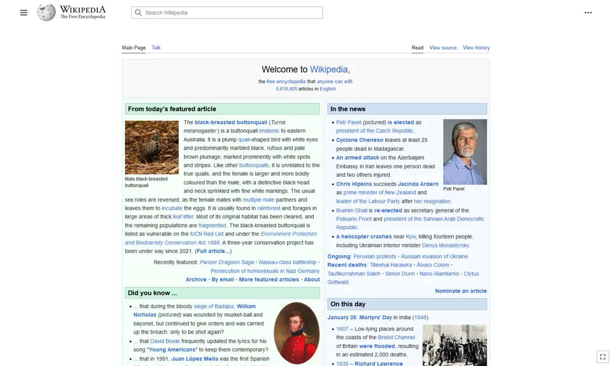

短答
响应式布局是一份在视口变窄时重新流动的文档。
截图是百科文章的宽桌面视图：侧栏和较宽的一栏。它显示的是一种宽度。它没有显示窄屏下的重排，也不是本站要抄的版式。SEO 健康问的是窗口变化时，你的文档是否仍然是同一个 URL、同一段文字。重复该页面的单独移动 URL 是重复页，不是响应式布局。
定义
重排是 CSS。viewport meta 让手机把自己的宽度当作布局宽度。两者合在一起是页面基础。它们不增加第二份文档，也不证明文字存在。如果窄布局把 H1 或规格藏在一个没有 HTML 等价物的控件后面，获取结果里可能仍有它们，但人无法使用。既要检查源代码，也要检查窄窗口。
页面基础里包括什么
保持一个 URL，并让 CSS 重排它，包括在窄宽度下。
不要发布复制该文档的第二个主机或 /m/ 路径。不要在窄断点去掉主要文字。像截图那种桌面视图一样打开一条产品 URL，然后再收窄。标题、H1 和规格应该仍是同样的词语。整页横向滚动是失败的重排，不是一种风格。

要检查什么
- 文档只有一个规范 URL
- 没有被复制的移动路径
- 窄宽度下是同一个 H1
- 有 viewport meta，使手机使用设备宽度
- 一条产品 URL 在宽和窄两种情况下都检查过
一个结构示例
站点在 /m/valve 提供同一个阀门页，其 canonical 指向自己，桌面 URL 也指向自己。于是有了两份文档。修复是保留桌面 URL，重定向 /m/ 路径，并修好把规格截掉的那个断点。百科截图仍然是别人的宽视图。
它不声称什么
响应式布局不保证排名或引用。
Mika Visibility 把它归到哪里
Mika Visibility 把标题、标题层级、语言和媒体基础归在 SEO 健康的内容与结构检查里。它们帮助页面被理解。它们不是 SEO 增长——增长问的是还缺什么覆盖——它们也不保证回答产品会引用这个页面。
截图是别人文章的一种宽宽度。测试是你自己的 URL 在两种宽度下的表现。
常见问题
响应式布局改变什么？
响应式布局是一份在视口变窄时重新流动的文档。
什么应该保持为一个 URL？
保持一个 URL，并让 CSS 重排它，包括在窄宽度下。
响应式布局能保证排名吗？
响应式布局不保证排名或引用。
下一步
做一次结构化的 SEO + GEO 审计，查看健康发现、增长缺口和可以执行的蓝图。
更清晰的实体、答案、证据和上下文，会让页面更容易被理解与引用。任何回答产品中的结果都不作保证。